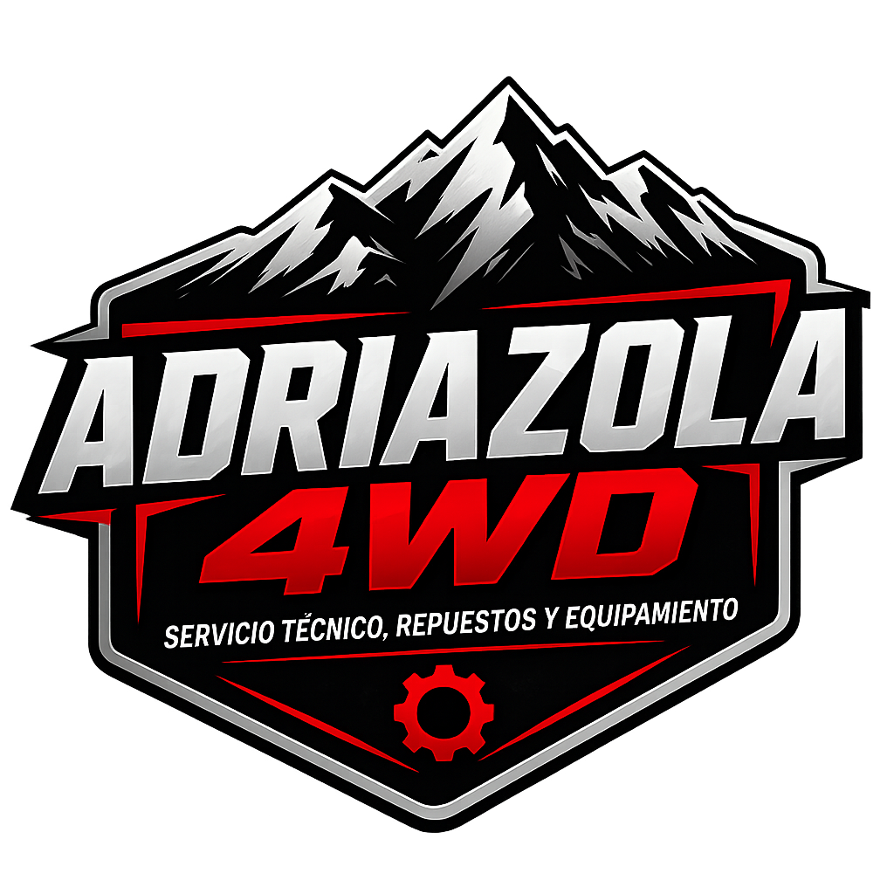
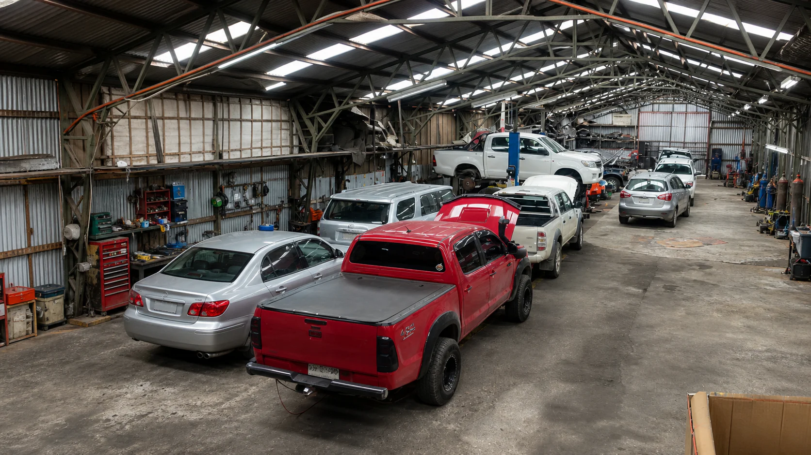
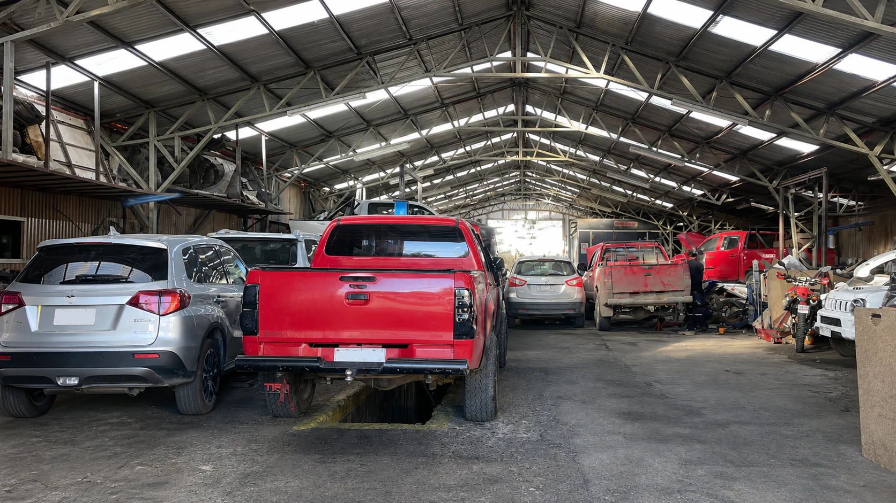
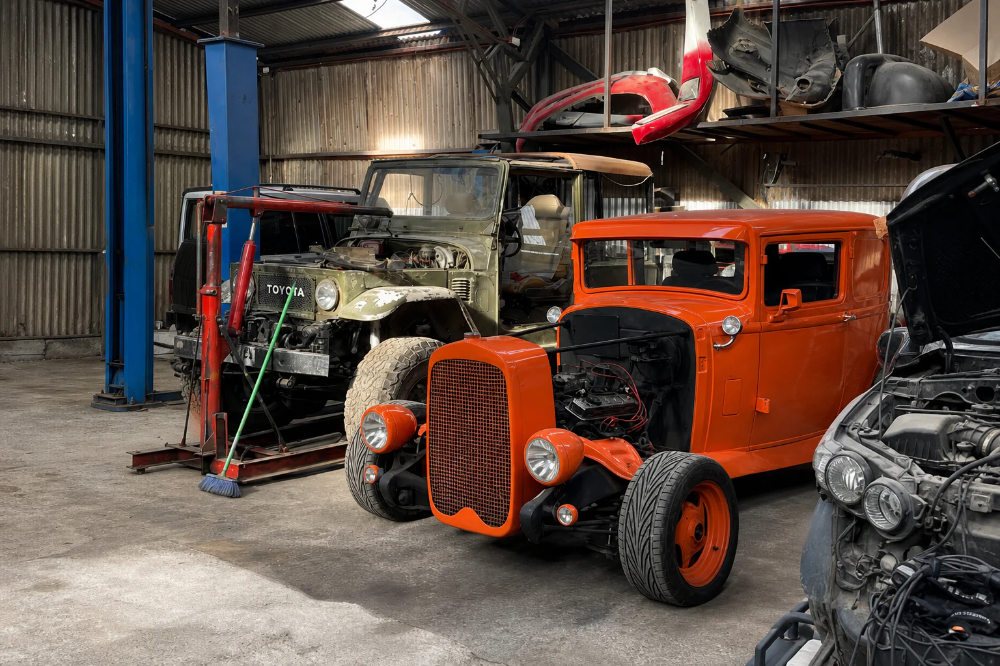
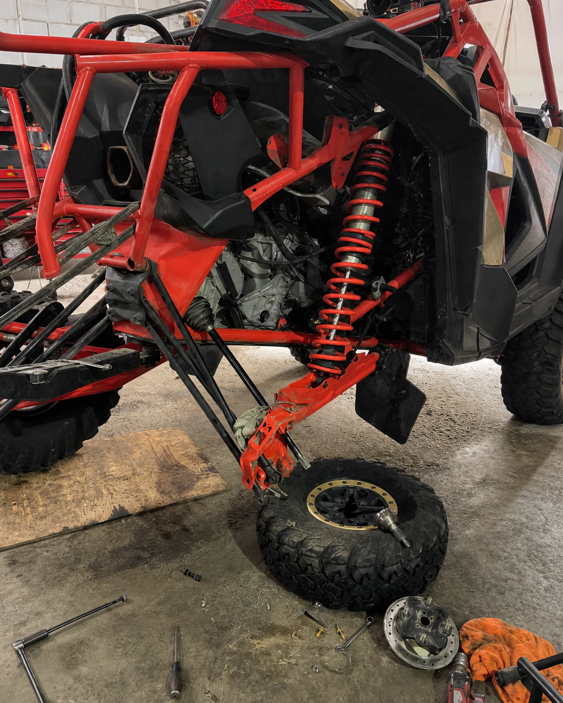
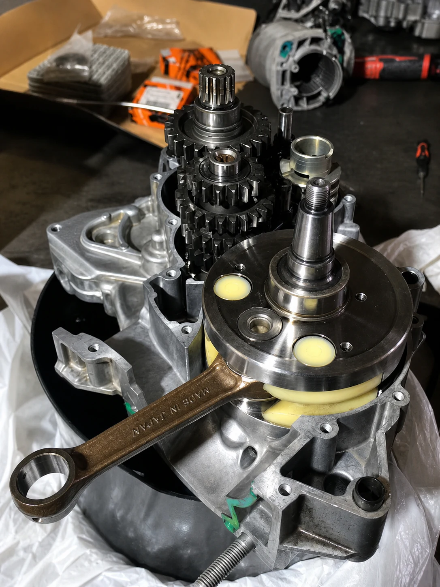
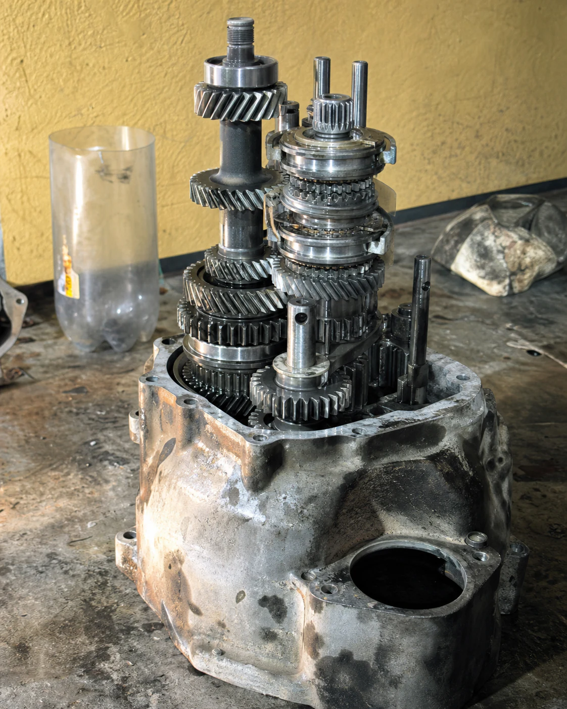
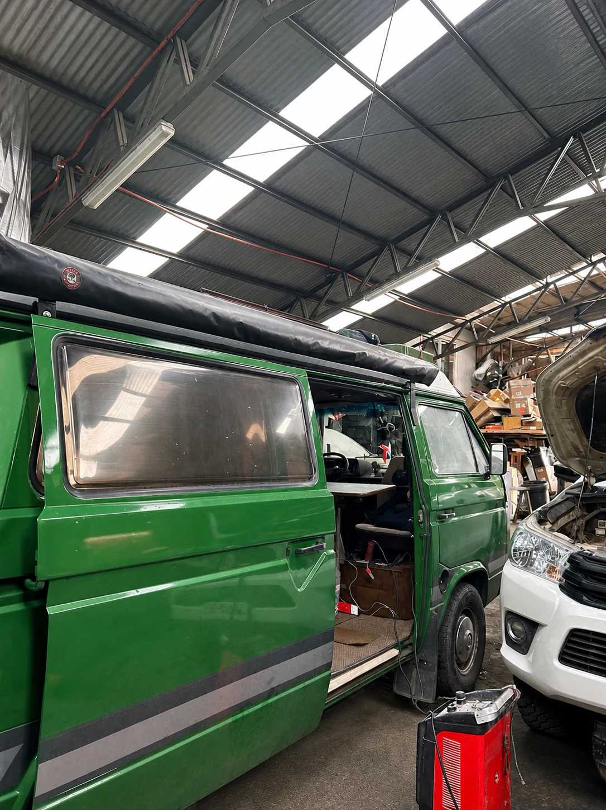

＋
Diagnóstico y scanner
Lectura de fallas y revisión técnica para encontrar la causa antes de cambiar piezas.

ADRIAZOLA 4WDServicio técnico · Coyhaique
Servicio técnico · repuestos · equipamiento
Taller mecánico y 4WD en Coyhaique. Diagnosticamos, reparamos y equipamos vehículos y máquinas con trabajo técnico realizado en nuestro propio taller.
Hecho en Coyhaique
En Adriazola 4WD trabajamos con diagnóstico, mecánica, repuestos y equipamiento para autos, camionetas y máquinas. Atendemos desde mantenciones hasta reparaciones mayores.
⌖Encuéntranos enLos Maitenes 949, Coyhaique↗Qué hacemos
Atendemos lo cotidiano y lo complejo. Revisamos cada caso antes de recomendar una solución.
Lectura de fallas y revisión técnica para encontrar la causa antes de cambiar piezas.
Aceite, filtros, fluidos e inspecciones para evitar fallas y prolongar la vida útil.
Reparaciones de motor, transmisión y sistemas mecánicos para autos y camionetas.
Inspección y reparación de sistemas críticos para una conducción segura y estable.
Detección de fallas, iluminación y equipamiento eléctrico para tu vehículo.
Servicio, equipamiento y fabricación para máquinas recreativas y de trabajo.
Dentro del taller
Una selección real de vehículos, máquinas y reparaciones realizadas dentro de nuestro taller en Coyhaique.






Cómo trabajamos
Primero entendemos el uso del vehículo. Después definimos el trabajo y te mantenemos al tanto.
Escríbenos por WhatsApp con el modelo y lo que necesitas.
Evaluamos el vehículo y acordamos el alcance antes de comenzar.
Ejecutamos el servicio y te explicamos lo realizado al entregar.
Hablemos de tu vehículo
Completa estos datos y abriremos una conversación de WhatsApp lista para enviar al taller.
Ven al taller